Java Script
Sumário
1. Como adicionar o script js no HTML?
Colocar sempre no fim do ‹body› dentro do HTML
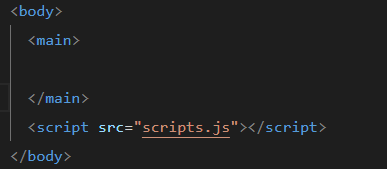2. Variáveis
Uma variável é um contêiner (ou rótulo) que armazena dados (como números ou texto) na memória do computador, permitindo que você os use e modifique no seu código.
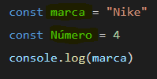'marca' e 'Número' são as variáveis presentes.
3. Number e string
String:
- Texto ou uma sequência de caracteres (letras, espaços, símbolos).
- Não permite cálculos matemáticos.
- Ex: "Olá Mundo", "Nike"
- Importante: String sempre são usadas dentro de aspas simples (' ') ou duplas (" ").
"Nike" é uma string.
Number:
- Valores matemáticos (inteiros ou decimais).
- Permite cálculos (somar, subtrair, multiplicar).
- Ex: 4, 10, 3.14, -5
- Importante: sempre é usada fora das aspas
4 é um number.
4. Convertendo valores:
Number para string
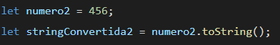
Colocar o number ao lado de .toString( )
String para Number
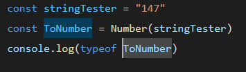
console.log(typeof ToNumber)
typeof mostra o tipo,se é string ou number,boolean,etc...
5. Criar variáveis e adicionar elas ao texto
(templateLiterals)
Ex:
'O aluno Leonardo de 19 anos tirou 7 na prova'
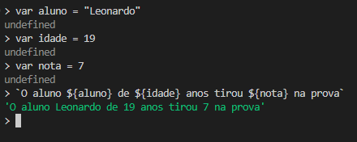`O aluno ${aluno} de ${idade} anos tirou ${nota} na prova`
Basta colocar a variável dentro de ${} para mencionar ela,e colocar crases `` no lugar das aspas em volta
Testar templateLiterals6. Mostrar segundo número após a virgula:
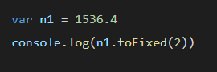
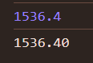
7. Transformar número com " . " em " , " :
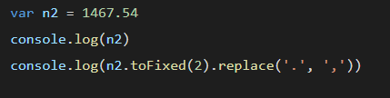
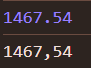
8. Conversão de real, dólar e euro
Real R$:
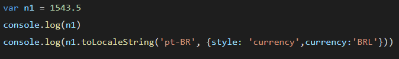
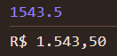
Dólar USD
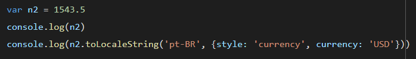
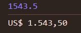
Euro €
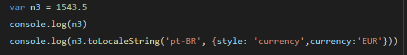
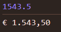